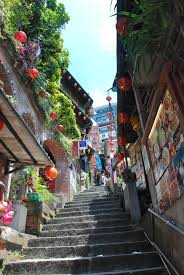

「臺灣」這座島嶼的名稱來自今日臺灣南部的古地名「大員」，即現今臺南市安平地區附近一帶[27]。此名稱最早為西拉雅族對台江內海對面外地人所在處的沙洲稱呼，族語意思為「外地人」或「異邦人」[28]。荷蘭人於此處建城後接受此稱呼，初譯為Teyoan、Taioan、Teyouvan、Tayouan、Taiyouan、Taiyouhan等[29]。1675年荷蘭製第一份清晰的臺灣地圖中定為「Tayouan」[30]，中文以大明漳泉海盜所用的閩南語音譯為「大灣」（Tāi-uân）、「大員」（Tāi-uân）、「大苑」（Tāi-uán）、「臺員」（Tâi-uân）等，還有一說為源自於大武壠族的自稱[31]。
艋舺龍山寺（臺羅：Báng-kah liông-san-sī），也稱萬華龍山寺，是位於臺灣臺北市萬華區（艋舺）的觀音寺，為龍山寺之一，其中元法會列中華民國無形文化資產、建築為國定古蹟。
龍山寺
饒河街觀光夜市位於台北市松山區，是台北市極具代表性的觀光夜市，也是台灣歷史悠久的指標性夜市之一。這裡緊鄰松山慈祐宮，匯集了國內外知名的道地小吃、經典台味與潮流攤位，每到夜晚便燈火通明，是體驗台北在地夜生活與美食文化的必訪聖地。
九份台北101位於台北市信義區，樓高 508 公尺，是台灣第一高樓及最具代表性的國際地標。大樓地上 101 層，附設大型購物中心，曾於 2004 至 2010 年榮登世界第一高樓。它不僅是全球首座高度超越半公里的摩天大樓，也是每位旅客到訪台北必遊的指標性景點。
台北101© 2026 南投高中電子商務科 | 311032盧宥婷
© 資料來自維基百科https://zh.wikipedia.org/zh-tw/Wikipedia:%E9%A6%96%E9%A1%B5